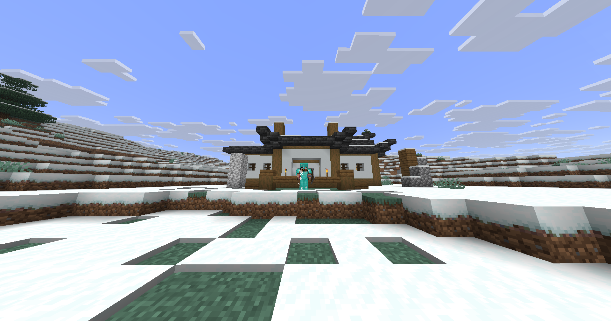

Gisteren ging de nieuwe server van start. De huisjes van Inkriin, Kyra en DutchMapping krijgen vorm, Kyra is haar spullen al kwijt en Inkriins teller staat inmiddels op acht sterfgevallen.
Door de redactie//De openingseditie
Inkriin & Kyra Hun gezamenlijke huis in aanbouw. Foto van de server, 13 september 2026.
Bouw & samenleving
De grote herstart: eerst een huisje, dan wereldheerschappij
NIEUWE WERELD: Haal de werkbank maar weer tevoorschijn: op zijn we begonnen op een gloednieuwe server. Een lege wereld, nieuwe plannen en het onwrikbare vertrouwen dat we het deze keer allemaal heel verstandig gaan aanpakken.
De eerste bouwprojecten zijn inmiddels gestart. We zijn druk bezig met onze huisjes: de bescheiden eerste stap op weg naar alles wat later ongetwijfeld veel te groot wordt. Vandaag een dak boven je hoofd, morgen een uitbreiding waarvoor je een compleet bos moet opofferen. De redactie noemt het alvast economische groei.
Inkriin en Kyra bouwen samen aan hun huis in het besneeuwde landschap. De houten balken en cobblestone muren staan al overeind; het dak is nog een toekomstproject. De woning heeft voorlopig dus vooral een zeer open karakter. De frisse lucht is inbegrepen.
Ook DutchMapping is aan het bouwen. Zijn huis krijgt witte muren, houten balken en een donkere dakrand. De entree begint er al netjes uit te zien. Het is dat heerlijke begin waarin ieder blok nog telt en een eigen voordeur al als een belangrijke maatschappelijke prestatie voelt.

DutchMapping Zijn huis krijgt al een eigen gezicht. Foto van de server, 13 september 2026.
Nethernieuws / Schade & schande
Kyra minstens vier keer dood in de Nether; inventaris dient ontslag in
NETHER: Terwijl de huisjes nog in aanbouw zijn, heeft Kyra alvast een andere prioriteit gevonden: uitgebreid kennismaken met het respawnscherm. Ze is minstens vier keer doodgegaan in de Nether en is al haar spullen kwijtgeraakt.
Vier keer. Minstens. De redactie benadrukt dat dit geen typefout is, maar een ondergrens. Waar de meeste spelers bij een nieuwe server opnieuw beginnen, heeft Kyra dat concept meteen meerdere keren in praktijk gebracht. Een soort serverreset op persoonlijk niveau.
De Nether-trip kan daarmee officieel de boeken in als een bijzonder ongunstige ruil: Kyra leverde haar spullen in en kreeg er een verhaal voor deze krant voor terug. Wij vinden dat een uitstekende opbrengst. Kyra vermoedelijk iets minder.
Nieuwe server, schone lei, lege inventaris. Vooral dat laatste is uitstekend gelukt.
Hoe de afzonderlijke sterfgevallen precies zijn verlopen, is niet aan de redactie doorgegeven. De eindstand is wel helder: de Nether staat voor, Kyra staat weer aan het begin.
Overworld / Lokaal nieuws
Inkriin staat al op acht: ook de Overworld eist slachtoffers
OVERWORLD: Een kleine update voor onze administratie: Inkriin is inmiddels al acht keer doodgegaan. Ook gewoon in de Overworld. De redactie had zijn talent voor het vinden van het respawnscherm duidelijk onderschat.
Waar Kyra haar ondergang in de Nether zoekt, heeft Inkriin bewezen dat het ook dichter bij huis kan. Geen portaal nodig voor een vernederende start. Wij houden de teller bij; Inkriin test ondertussen of er een limiet op zit.
Het huis van Inkriin en Kyra staat ondertussen in de sneeuw in aanbouw. Een eigen thuisbasis is wel zo handig als je zo vaak opnieuw aan je dag begint. Nu alleen nog af en toe levend thuiskomen.
Van de redactie
De krant is terug. Het bronmateriaal ook.
Na een lange stilte draait de pers weer. Een nieuwe wereld verdient nieuwe verslagen, en met deze openingsdag hoeven we ons voorlopig geen zorgen te maken over een gebrek aan nieuws.
Aan iedereen die aan een huisje bouwt: veel succes. Aan iedereen die zijn spullen kwijt is: eveneens veel succes, maar dan met iets meer medeleven en een bescheiden hoeveelheid gelach.
Voor Volk en Vaderland. En deze keer misschien eerst een reservepickaxe.
Aan de redactietafel
Jouw kant van het verhaal? Laat een reactie achter met je GitHub-account.